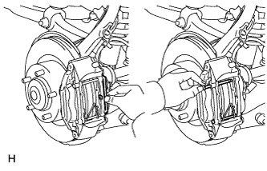
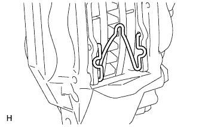
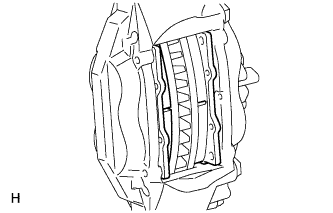
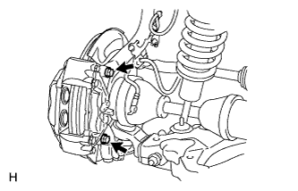

FRONT BRAKE > REMOVAL |
| 1. REMOVE FRONT WHEEL |
| 2. DRAIN BRAKE FLUID |
| 3. REMOVE FRONT DISC BRAKE PAD |
 |
Remove the pin hold clip.
Remove the 2 hole pins.
 |
Remove the front disc brake anti-rattle spring.
 |
Remove the 2 pads from the disc brake caliper.
Remove the No. 1 anti-squeal shims from each pad.
| 4. DISCONNECT FRONT FLEXIBLE HOSE |
 |
Remove the union bolt and gasket, and then disconnect the flexible hose.
| 5. REMOVE DISC BRAKE CALIPER ASSEMBLY LH |
 |
Remove the 2 bolts and disc brake caliper from the knuckle.
| 6. REMOVE FRONT DISC |
 |
Put matchmarks on the front disc and axle hub if planning to reuse the disc.
Remove the front disc.